編集できる楽譜つきのフルソングを、自分の GPU で
YuE2 のためのデスクトップスタジオです。YuE2 は歌う前に楽譜を書くオープンなソングモデル。スタイルを説明し歌詞を書くと、モデルがコードつきのメロディを楽譜として作曲し、ボーカル入りのフルソングとして演奏します。楽譜を読み、書き換え、同じ曲を別のサウンドでレンダリングできます。単一の実行ファイル — Python もランチャーも不要。
Windows 10/11 x64 と VRAM 6 GB 以上の GPU：NVIDIA（GTX 900 以降）は CUDA で動作。AMD と Intel の Vulkan は実験的です。モデルはスタジオ内から、あなたが決めたときにダウンロードされます。
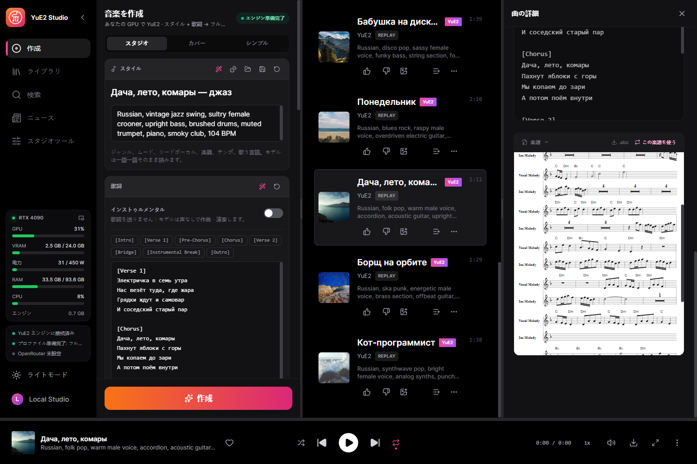
できること
クラウドキーを自分で接続しない限り、以下はすべてあなたのマシンで動きます。
フルソング
スタイルと歌詞から最長 6 分。RTX 4090 と Q8_0 セットで 3:38 の曲が約 46 秒でレンダリングされます。
編集できる楽譜
曲は ABC 記譜で返され、楽譜として表示されます。編集してもう一度作成すると、曲はそのままに演奏が変わります。
まず楽譜だけ
歌う前に数秒で楽譜だけを作成。読んで直してから作成します。yue2.cpp の yue-plan に相当。
カバー
SheetSage2 が録音のメロディを楽譜に書き起こし、YuE2 があなたのスタイルで歌います。歌詞はそのメロディに合っている必要があります。元の歌詞か、各行の音節数とアクセントの位置が同じ新しい歌詞でないと、歌がメロディからずれていきます。
完全な再現
各トラックはリクエストとオーディオコードを保存。ビット単位で再レンダリング、またはステップや音のシード、バリエーションを変えて再生成できます。
110 のサンプル
yue2.cpp に同梱のスタイル・歌詞・楽譜のセット（カバーを含む）をワンクリックで読み込めます。
作詞アシスタント
ローカルの Gemma または OpenRouter がアイデアからスタイルと歌詞を書き、依頼に応じて楽譜を編集します。
単語単位のカラオケ
すべての単語にタイムスタンプを持つ拡張 LRC。Parakeet または Whisper で同期。
GPU でステム分離
ドラム、ベース、その他、ボーカル、ギター、ピアノを HT-Demucs で分離。
LoRA
作曲またはサウンドに効く LoRA と LoKr を、それぞれ強さを付けて使えます。既製のカタログと、選んだものをダウンロードする Hugging Face 検索付き。
自分だけの LoRA
同じアーティストやスタイルの曲から、HOT-Step のトレーナーとレシピで LoRA を自分の GPU で学習。設定はすべて変更でき、データセットはこのスタジオと MiniMax Music3 Studio の間で移せます。
フォルダを落とすだけでデータセット
フォルダを落とすと、歌詞はプレーヤーが使う歌詞データベース（LRCLIB、QQ Music、Kugou）から一字一句取り込み、どこにもない曲だけ Whisper が聞き取ります。MOSS-Music が各曲を聴き、アシスタントがスタイルを書きます。曲ごとに進行が見え、再起動しても止まったところから続きます。
音声処理
ノイズ除去、Spectral Lifter、ボーカルの自然化、自分の VST3 プラグイン、リファレンスマスタリング。処理前後を聴き比べ、バージョンとして残すか破棄します。
エージェントで操作（MCP）
Claude Code、Claude Desktop、Cursor をつなぐと、エージェントがスタジオでできることをすべて行います。曲を書いて生成し、データセットを整えて学習し、カバーを描き、動画エディタでクリップを作り、曲を再生し、ウィンドウを見てボタンを押します。モデル向けの書き方のルールが付属するので、スタイルと歌詞はエージェント自身が書きます。 作詞アシスタントに選べば、ローカルモデルの代わりにエージェントが書きます。
どのトラックも MIDI に
曲、ステム、処理済みテイクを、GPU 上の MuScriptor がマルチ楽器の MIDI（34 の楽器グループとドラム）に変換します。ピアノロールは聴き取りに合わせて埋まり、原曲と重ねて再生、楽器のミュートやソロ、.mid の保存ができます。初回使用時にダウンロードされます。
結果はすべてトラックに
ステム、処理済みテイク、再レンダー、カバーは、それぞれ独立したトラックとしてライブラリに入り、元の曲へのリンクと作成時の設定を保持します。
サンプル
クリーンインストールと推奨セットで作成し、スタジオが保存したままの音です。英語、スペイン語、中国語、日本語、ロシア語。
English, funk disco, groovy male voice, slap bass, wah guitar, brass stabs, four on the floor drums, playful, 118 BPMEnglish, country, warm male baritone, acoustic guitar, pedal steel, fiddle, brushed drums, easygoing, 96 BPMSpanish, latin pop, bright female voice, nylon guitar, congas, piano montuno, bass, sunny danceable, 102 BPMMandarin, city pop, smooth male voice, electric piano, funky bass, clean guitar, drum machine, warm night mood, 108 BPMJapanese, j-rock, energetic female voice, distorted electric guitars, driving bass, fast drums, anime opening, 168 BPMRussian, folk pop, warm male voice, accordion, acoustic guitar, upright bass, 104 BPMRussian, vintage jazz swing, sultry female crooner, upright bass, brushed drums, muted trumpet, 104 BPMRussian, blues rock, raspy male voice, overdriven electric guitar, hammond organ, shuffle drums, 96 BPMRussian, disco pop, sassy female voice, funky bass, string section, four on the floor drums, 120 BPMRussian, ska punk, energetic male voice, brass section, offbeat guitar, fast drums, 150 BPMRussian, synthwave pop, clear expressive female voice, analog synths, punchy drum machine, 112 BPMRussian, upbeat pop-punk, energetic male vocals, driving distorted electric guitars, fast bass lines, crashing drums, rebellious and fun, 185 BPMスクリーンショット
この言語で表示したスタジオそのもの。
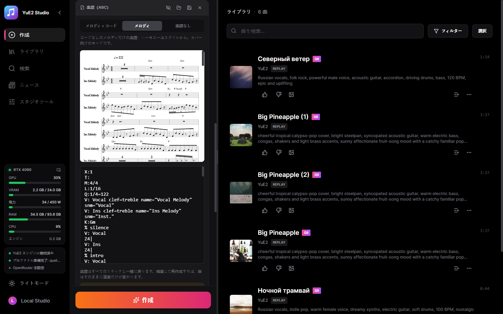
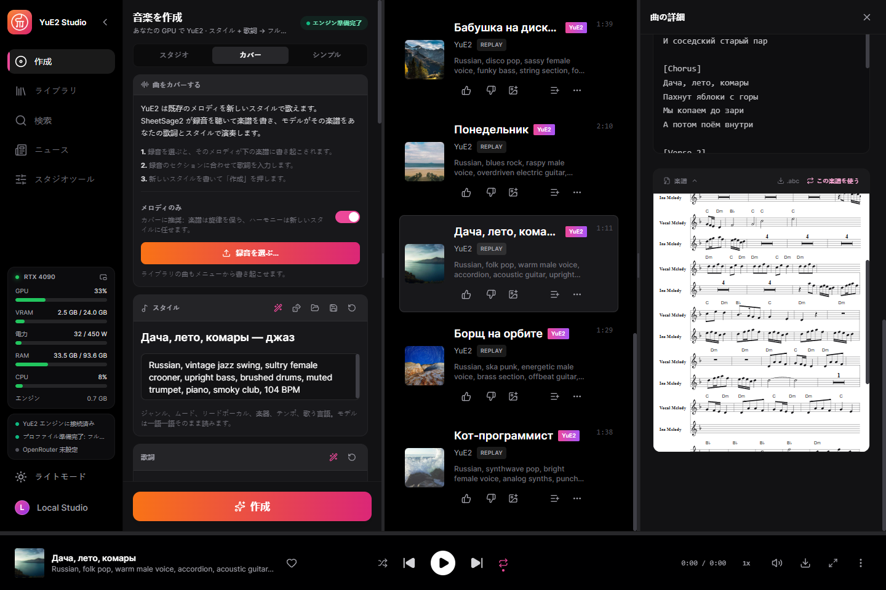
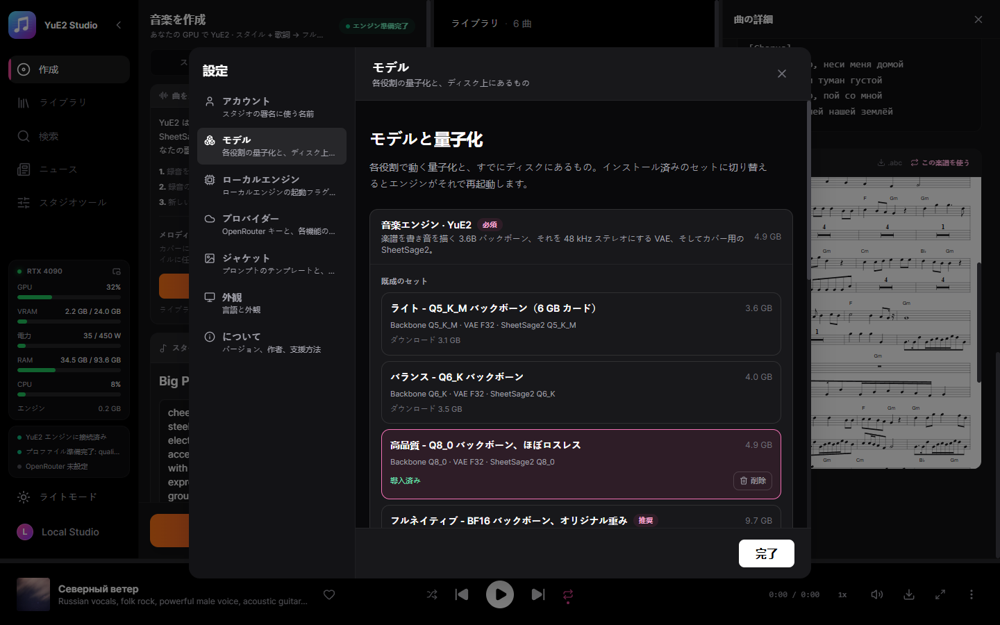
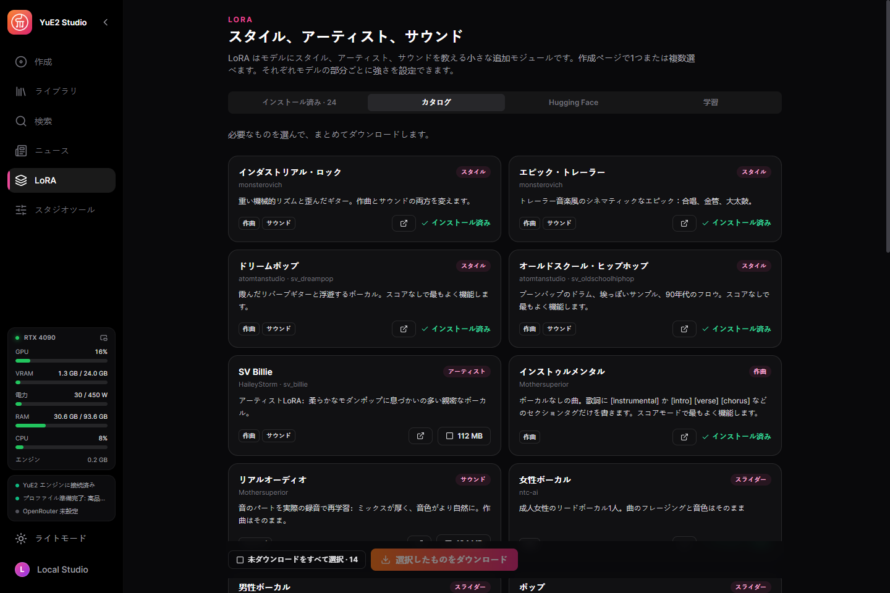
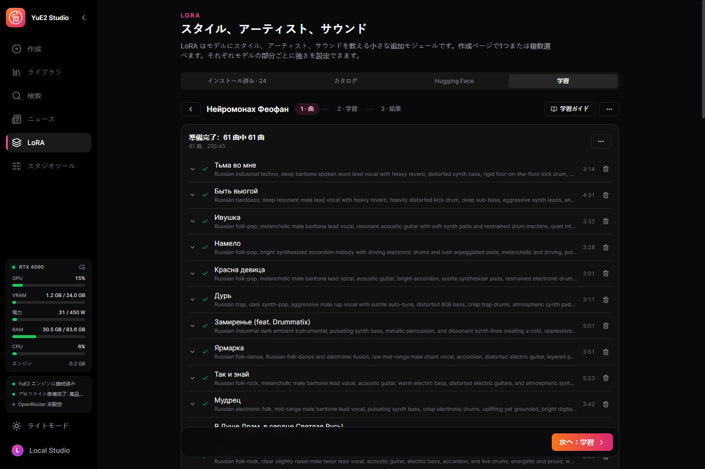
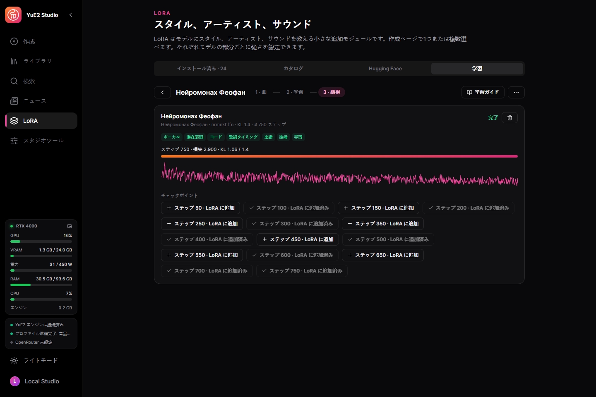
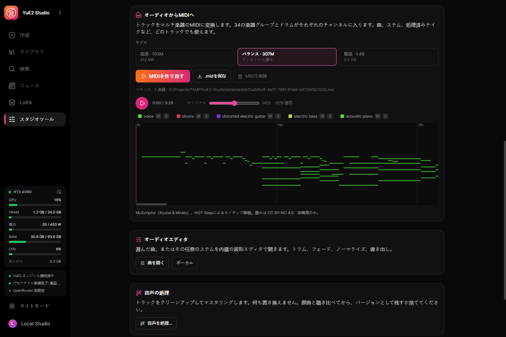
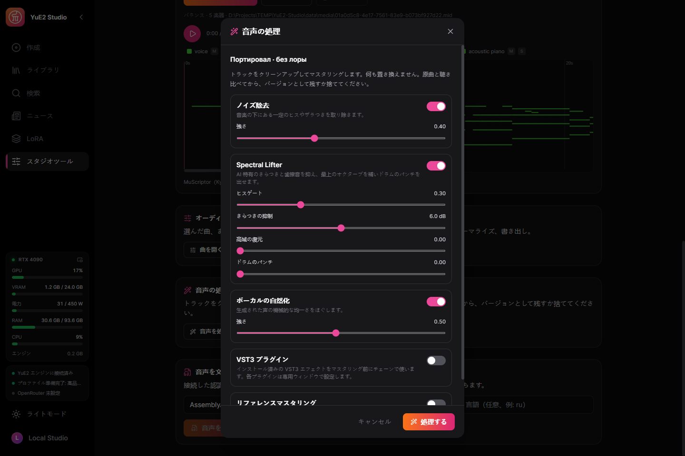
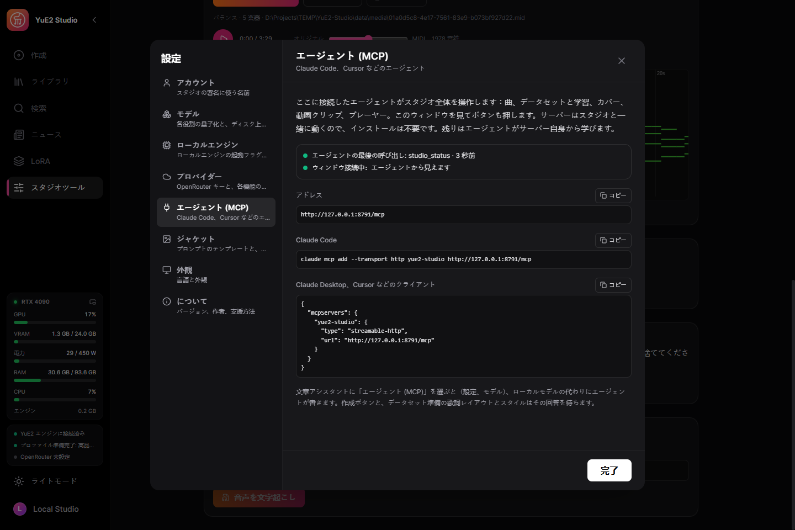
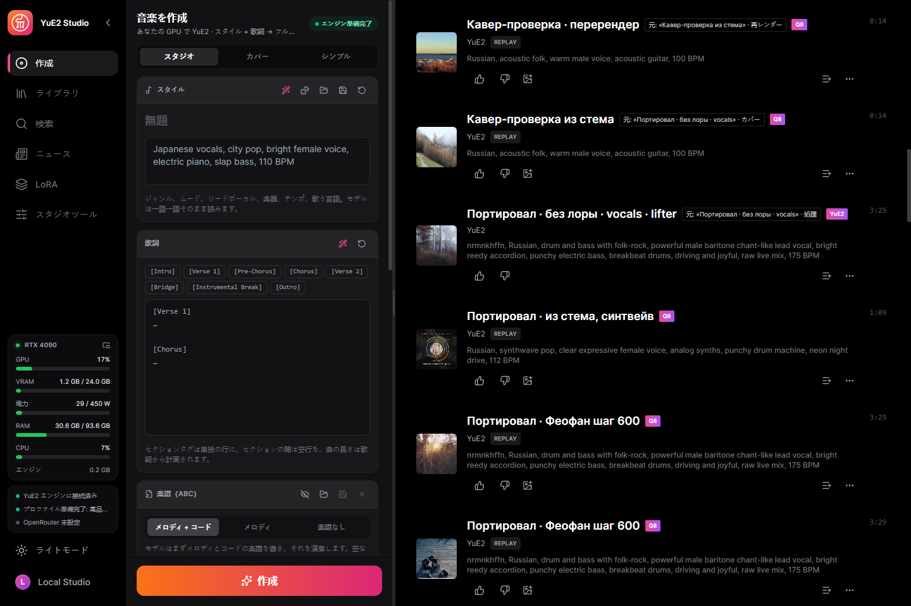
モデル
動作するセットは YuE2-3B バックボーンと VAE。SheetSage2 は任意で、カバーにのみ必要です。
| あなたの GPU | セット | ダウンロード |
|---|---|---|
| 12 GB+ | フルネイティブ — BF16、オリジナル重み | 9.7 GB |
| 8 GB+ | 高品質 — Q8_0、ほぼロスレス | 4.9 GB |
| 7 GB+ | バランス — Q6_K | 4.0 GB |
| 5.5 GB+ | ライト — Q5_K_M | 3.6 GB |
サイズは SheetSage2 を含みます。スタジオはカードで動くセットを事前に選びますが、ダウンロードは常にあなたの判断です。各ファイルは固定された Hugging Face リビジョンに対して SHA-256 で検証され、中断したダウンロードは再開されます。
はじめかた
- インストール — インストーラーを実行するか、ポータブル版を任意の場所に展開します。
- セットを選ぶ — 最初の画面がカードで動くセットを選び、不足分だけをダウンロードします。
- 書く — スタイルと歌詞を書くか、サンプルを読み込みます。インストゥルメンタルはスイッチひとつ。
- 作成 — エンジンが自動で起動し、曲は楽譜とともにライブラリに入ります。
何がどこで動くか
既定ではすべてローカル。クラウドキーは、選んだ機能のためにあなたが追加します。
| 構成要素 | 実行場所 | サイズ |
|---|---|---|
| YuE2 エンジン（yue2.cpp） | GPU：CUDA、Vulkan またはプロセッサ | 同梱 |
| YuE2 モデルセット | あなたの GPU | 3.6–9.7 GB |
| NVIDIA cuBLAS | NVIDIA カードのみ | 391 MB、初回のみ |
| カラオケのタイミング — Parakeet または Whisper | あなたのマシン | 任意 |
| ステム分離 — HT-Demucs | GPU または CPU | 任意 |
| 作詞アシスタント | ローカル Gemma または OpenRouter | 任意 |
| LoRA 学習 — HOT-Step ace-train | NVIDIA RTX 30 以降、VRAM 11 GB | 8 GB、任意 |
| 曲を聴いて説明 — MOSS-Music-8B | VRAM 約 12 GB | 10 GB、任意 |
| VST3 ホスト — HOT-Step | あなたのマシン、独立したプロセス | 同梱 |
| オーディオから MIDI — MuScriptor（HOT-Step ace-midi） | NVIDIA GTX 16 / RTX 20 以降 | 0.5–5.6 GB、任意 |
しくみ
サービスはデスクトップ実行ファイルに組み込まれ、C++ エンジンを管理します。完成した曲はサービス自身が取り込むため、再読み込みやウィンドウを閉じても結果は失われません。
React UI ─┐
├─ YuE2-Studio.exe (Tauri window + Rust/Axum service)
Rust axum ┘ │
└─ yue2.cpp `yue-server` (C++/CUDA, GGUF)
プライバシー
あなたの音楽はあなたのもので、あなたのディスクに残ります。
アカウント不要
登録するものは何もありません。
テレメトリなし
スタジオは何を生成したかを送信しません。
クラウドは任意
キーを追加するまで何もマシンの外に出ません。追加後もその機能のためだけです。
作者
Nerual Dreming — アーティスト、ArtGeneration.me と Neuro-Cartel コミュニティの創設者。このスタジオの前身である ACE-Step Studio と MiniMax Music3 Studio の作者。